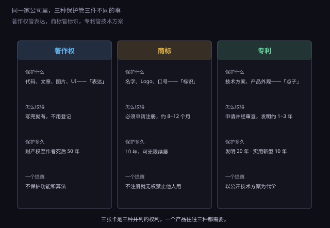
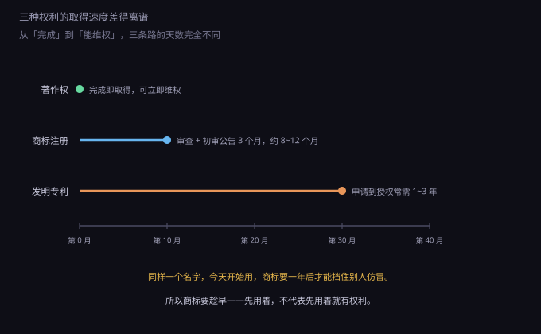
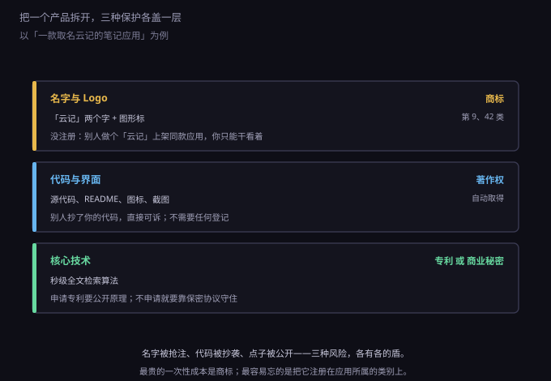

约 0.47 万字 · 3 张图 · 自动取得与申请取得，差的不只是时间
先建立最基础的概念。法律上的"知识产权"不是一种权利，是一族权利， 每一种管的东西都不一样。搞混了，就会做无用功——比如给一个算法申请著作权登记， 以为能挡住别人用同样的算法做出另一个产品。
著作权（也叫版权）保护的是表达。 你写的那段代码、那篇文章、画的那个图标、做的那套界面， 具体的"这个样子"受保护。但它保护不了"想法"本身： 你写了一个把待办事项按优先级排序的功能，别人用完全不同的代码实现同样的功能， 这不侵犯你的著作权。
商标保护的是标识。 "云记"这两个字、那个蓝色的云朵图形、那句"记下来就不会忘"的口号， 这些是用来让用户认出"这是你家的产品"的符号。商标不管你的产品做得好不好， 只管别人能不能用同样的符号冒充你。
专利保护的是技术方案。 不是"一个想法"，而是"一个有具体步骤、能重复实现、能解决技术问题的做法"。 比如"一种基于倒排索引的增量式全文检索方法，其特征在于……"， 这一串写清楚了，才叫专利。

这张图里最值得盯的是每张卡的最后一行，它写的是"这种权利不管什么"。 著作权不管功能和算法；商标不注册就无权禁止别人用； 专利要拿技术方案的公开去换。这三个"不管"，正好是三种最常见的期待落空。
著作权最特殊的地方是自动取得。 我国《著作权法》实行的是"作品完成即自动产生"，不需要登记、不需要申请、不花钱。 你今晚写完一个网页，明早它就受著作权保护了。
这跟很多人的直觉相反——大家总觉得"要注册一下才算我的"。 不需要。著作权法里确实有"作品登记"，但那是自愿登记， 作用是"初步证明"，不是权利产生的前提。
那为什么还要登记？因为打官司时的举证成本。 著作权侵权判断有个经典公式：接触 + 实质性相似。 你得先证明对方"有机会看到你的作品"，再证明"两边像得不像巧合"。 如果作品从没公开过，登记证书和提交时间就是最省事的那份证据。
比登记更便宜的做法是留痕。代码推到 GitHub、文章发在带时间戳的平台、 设计稿存一份带日期的云备份，这些都比"我记得是我先写的"有用得多。 真正打起来的时候，法官看的是证据，不是记忆。
著作权里还要分清两类权利，因为它们的期限完全不同。
人身权：署名权、修改权、保护作品完整权。 这三项没有期限，永远是你的，不能转让，也不能放弃。
财产权：复制权、发行权、信息网络传播权、改编权等等。 这些可以卖、可以许可、可以继承。期限是作者终生加死后五十年； 如果是公司拥有的职务作品，一般是首次发表后五十年。
软件还有一层特殊规定。《计算机软件保护条例》把程序也纳入著作权保护， 但保护的仍然是代码的表达：你写的这一千行 Java 不能被照抄。 如果别人看了你的软件，用另一种语言重写了一遍同样的功能， 那不构成著作权侵权——因为功能和思想不受著作权保护。 想挡住这种情况，得靠专利，或者靠保密。
最后提醒一个实操细节：买素材要看授权范围。 网上下的字体、图库照片、图标包、音效，很多是"个人使用免费，商用需另外授权"。 用一张没买商用授权的图片做产品首页，收到律师函的案例每年都有， 索赔金额往往远超图片本身的价格。用完再补授权，价格通常翻几倍。
商标是三者中唯一"不注册就等于没有"的权利。 你可以一直用某个名字做生意，但只要没注册，别人抢先注册了， 继续用的是你，被投诉下架的也是你。
我国商标实行先申请原则：谁先提交申请，谁拿到权利， 不管谁先用。这条规则制造了大量"抢注"生意—— 有人专门盯着小有名气但还没注册的品牌，抢先注册，再反过来要授权费。
注册流程的时间成本比大多数人预期的高。提交申请之后要过四道： 形式审查（材料齐全与否，约一到两个月发受理通知书）、 实质审查（查有没有相同或近似的在先商标，四到六个月）、 初审公告（三个月异议期，任何人都能提异议）、 最后核准注册发证。顺利的话八到十二个月，被异议或者驳回，一年半也常见。

所以判断标准很直接：只要这个名字你打算长期用、并且可能印在用户看得见的地方， 就该尽早申请。不要等产品做完了再注册——等做完，可能已经有人在申请了。
商标注册还有个绕不开的技术活：选类别。 商标按《尼斯分类》分四十五个大类，一个申请只能覆盖一个类别， 每类单独收费。做软件的产品，至少要覆盖：
只注册第 9 类，是新手最常犯的错：别人在第 42 类用同样的名字做 SaaS， 你投诉不掉，因为类别不同不算类似商品。补注册又要再等一年。
商标的期限是十年，可以无限续展，每次续展再十年。 但有个容易被忽略的条款：连续三年不使用，可以被任何人申请撤销。 所以"先把四十五个类全注册了囤着"这件事，既贵又守不住—— 真被人提"撤三"，你拿不出使用证据，商标照样没了。 防御性注册的合理做法是覆盖核心类别加两三个关联类别，而不是全类。
还有两个常见的概念混淆，说清楚能省不少钱。
公司名字不等于商标。 你在市场监管局核准的"某某科技有限公司"是字号， 由当地登记机关核准，只在登记辖区和行业内有一定保护。 商标由国家知识产权局核准，全国有效。两套系统，互不替代。 公司名字核准下来了，不代表"某某"这两个字你能在软件上独占地用。
域名也不等于商标。 域名是先注册先得，但它只是地址，不是标识权。 别人拿你的品牌名注册了 .com，你能做的通常是走域名争议解决程序， 前提是你得证明自己对这名字有商标权或者其他在先权利。 没有商标，这条路基本走不通。
商标也不能随便写。缺乏显著性的词注册不下来： 通用名称（"面包"）、直接描述功能特点的词（"快速笔记"）、 地名（原则上不行，除非有历史渊源）。 反倒是生造词最容易注册——"云记"这种没人用过的组合，显著性天然就够。
专利的底层逻辑是一笔交易：你把技术方案完整公开，国家给你一段时间的独占权。 公开是义务，独占是回报。这一条决定了专利所有反直觉的地方。
三种专利，期限和门槛都不同。
发明：保护产品、方法或者它们的改进，期限二十年， 要经过实质审查（查新颖性、创造性、实用性），从申请到授权常常一到三年。 这是含金量最高的一种。
实用新型：只保护产品的形状、构造或者其结合， 不保护方法，期限十年，只做形式审查，几个月就能授权。 门槛低、速度快，但稳定性差——不经实质审查，被无效掉的概率高。
外观设计：保护产品的形状、图案、色彩的新设计， 期限十五年（2021 年修法从十年改成十五年），也只做形式审查。
申请专利有三个硬条件，缺一不可：
第一条是最容易踩的坑：先公开再申请，等于自己毁掉自己的专利。 很多团队在技术分享会上讲完方案，再去申请，被驳回了—— 因为公开日早于申请日。正确顺序永远是先递交申请，再对外讲。
还有一条必须知道：软件本身不能直接授予专利。 单纯的算法、单纯的商业方法，属于"智力活动的规则和方法"， 不属于专利保护的客体。但如果这个算法解决了具体的技术问题、 产生了技术效果，写成"一种××数据处理方法"就有机会。 比如图像压缩算法、数据库索引结构，属于可专利的范畴； "一种按优先级排序待办事项的规则"，基本不行。
专利拿到手也不是一劳永逸。每年要缴年费，而且年费逐年递增， 不缴就失效。很多专利不是被无效掉的，是被忘掉的。
最后是维权时的实际力量。专利侵权判断看的是"权利要求书"—— 那一段写得越具体，保护范围越窄；写得越宽，越容易被无效。 这是一场精确的平衡，也是为什么专利撰写要花几千块代理费： 写坏了，等于花钱买了一张废纸。
不是所有技术都值得申请专利。因为申请专利要公开， 公开之后，竞争对手照着你的说明书就能做出类似的东西， 只是不能直接照抄权利要求里的方案。
所以有一类技术反而更适合"不说"。这叫商业秘密， 受《反不正当竞争法》保护，条件只有三条： 不为公众所知悉、有商业价值、你采取了保密措施。
第三条最容易被忽略，也最容易致命。员工把代码带走了， 你说是商业秘密，法院第一句会问：你采取什么保密措施了？ 没有保密协议、没有权限管理、代码放在公开仓库里， 那它就不构成商业秘密，谁都能用。
可口可乐的配方是商业秘密的经典例子：一百多年不申请专利， 因为一申请，二十年之后就公开了，全世界都能照着做。 反过来，手机里的射频电路结构、芯片里的晶体管布局，通常选专利， 因为这类东西拆开就能逆向出来，保不住密。
判断标准可以简化成一句：这东西别人能不能通过拆解产品、看代码、 读文档反推出来？能反推的，申请专利换保护； 反推不出来的（配方、工艺参数、内部流程），按商业秘密守着。
真实的项目不是"选一种保护"，而是三层同时铺。 拿一款叫"云记"的笔记应用举例。

第一层是名字和 Logo。这是用户唯一能一眼认出的东西， 也是被抢注之后损失最大的一层——你所有宣传、所有用户认知，都在给别人的商标做嫁衣。 这一层必须注册，而且要覆盖核心类别。
第二层是代码和界面。这一层是自动取得的，不用花钱， 但要留证据：Git 提交记录、设计稿的时间戳、发布记录。 万一有人抄了你的前端，这些就是"接触"的证明。
第三层是核心技术。这里要做个选择题：申请专利，还是保密？ 如果这个方法是产品的护城河、而且能保密（比如推荐算法的权重、数据清洗的规则）， 保密往往更划算；如果这个方法拆开产品就能看出来，那就申请专利。
这一节内容最容易记混，我把最常见的六个误解列出来，每条都给出正确说法。
误解一：我写了就一定是我的。 权利确实是你的，但你可能证明不了。解决方式不是去登记， 而是从今天开始留痕：代码进版本库、文稿带时间、设计稿存云端。
误解二：登记了著作权就等于有了专利。 完全不同的两套制度。著作权登记挡不住别人用同样的思路做另一个软件， 只有专利能挡"方法"层面的模仿。
误解三：公司名字注册了，名字就受保护了。 字号和商标是两套系统。公司名字只在你登记的辖区和行业里有意义， 商标才是全国性的、跨类别的（在核准类别内）。
误解四：专利申请中就能起诉别人侵权。 专利申请中还没有专利权，只有发明申请公开之后有"临时保护"—— 可以要求实施者支付使用费，但不能像有专利权那样要求停止侵权。 真正能起诉，要等授权公告之后。
误解五：商标注册一次就永久有效。 十年一续，而且连续三年不使用可能被撤销。 续展要在期满前十二个月内办，还有六个月宽展期，宽展要加钱。错过就注销。
误解六：开源代码可以随便用。 开源是"有条件的授权"，不是"放弃版权"。不同许可证的条件差别极大， 有的只要求保留版权声明，有的要求你衍生出来的东西也必须开源。 这一条下一节单独讲。
最后是实操。以个人或小公司为对象，把三项的官方费用和常见行情列一下。 这些数字会随政策调整，办事前应以官方公示为准。
著作权：不登记是零成本。软件著作权登记的官费已取消， 代理代办一般三百到六百元。个人项目可以先不花钱，只留痕。
商标：网上申请官费二百七十元一个类别（限十个商品或服务项目， 超出每项加收）。代理费一般五百到一千元一类。所以注册四个核心类别， 总花费大概在三千到五千元之间。这是三项里最该先花的钱。
专利：发明申请的官费是申请费九百元加实质审查费两千五百元， 符合费减条件（个人或小微企业）可减到一百三十五元和三百七十五元； 实用新型和外观设计的申请费都是五百元，费减后七十五元。 但代理费是大头：发明四千到八千元，实用新型两千到三千元。 年费另计，逐年递增。
小团队的合理顺序是这样：
顺序颠倒的代价很具体：先开发一年、上线半年、有了几千用户才想起注册商标， 结果发现半年前有人申请了同样的名字。这时候你要么改名（用户全丢）， 要么花钱买授权（价格由对方定），要么打异议或无效（时间和律师费都不便宜）。
一句话总结这一节：著作权是自动给的，商标是必须买的，专利是拿公开换的。 三种权利对应三种风险，缺一种就有一类对手你挡不住。